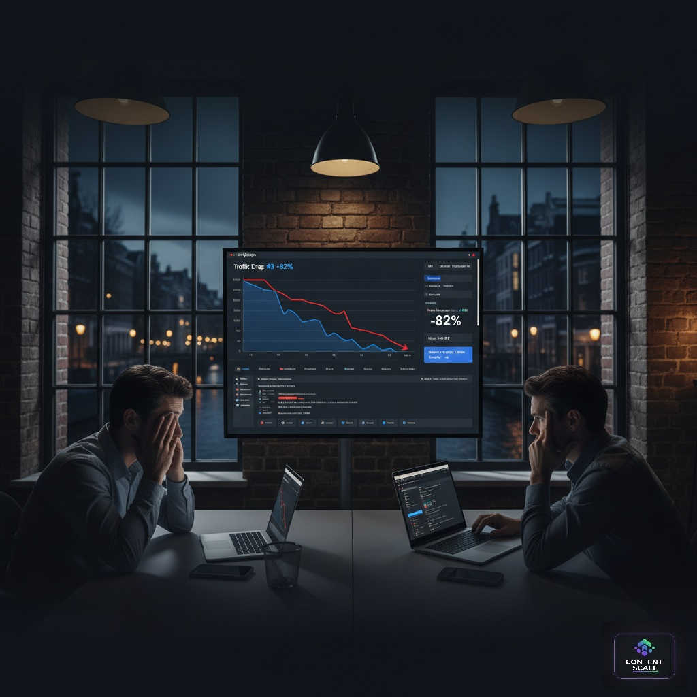
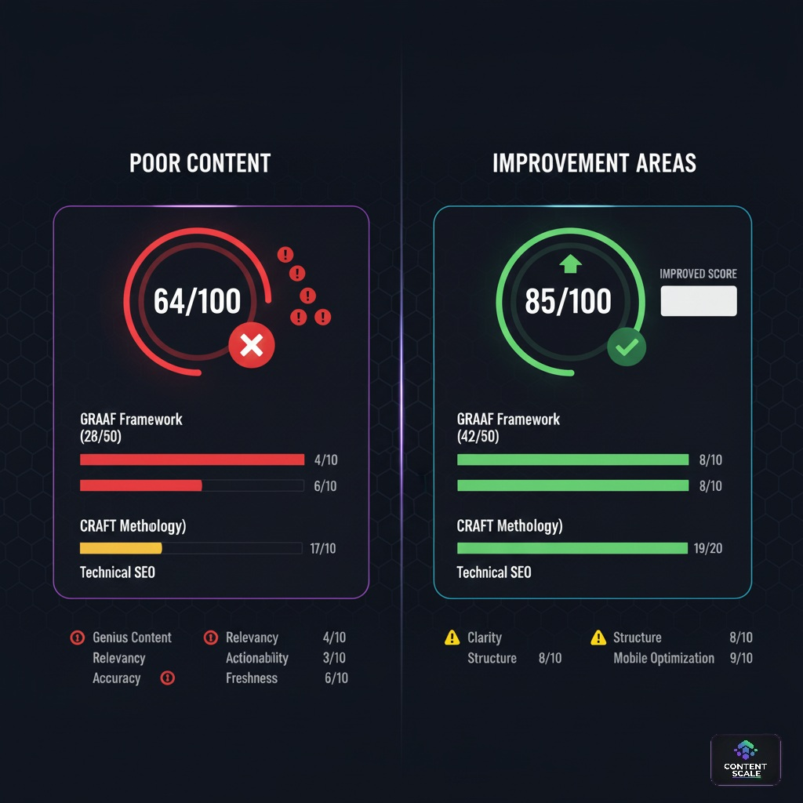
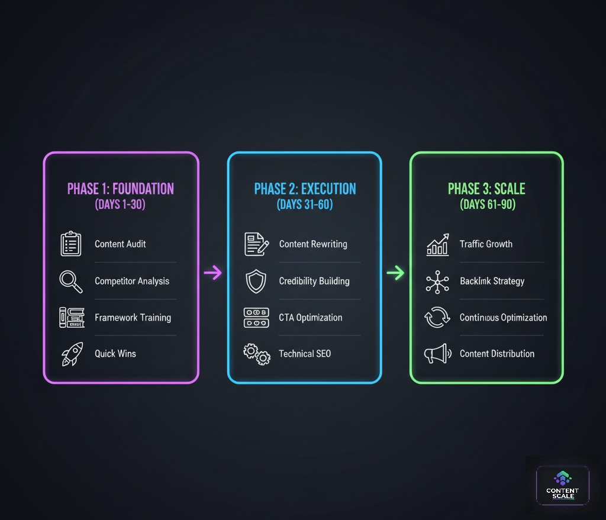
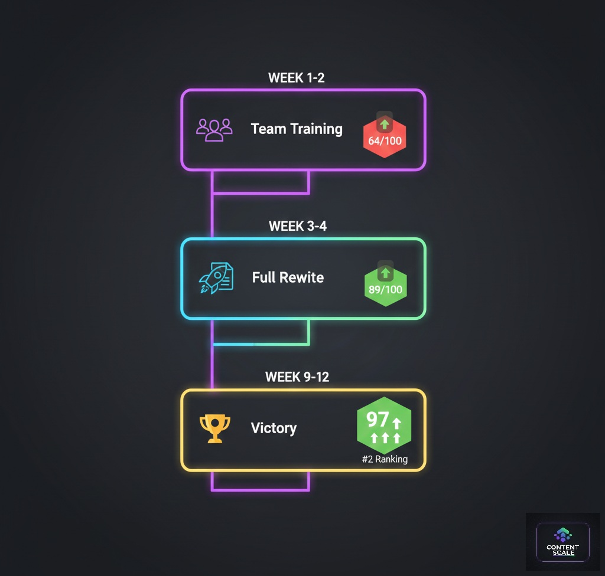
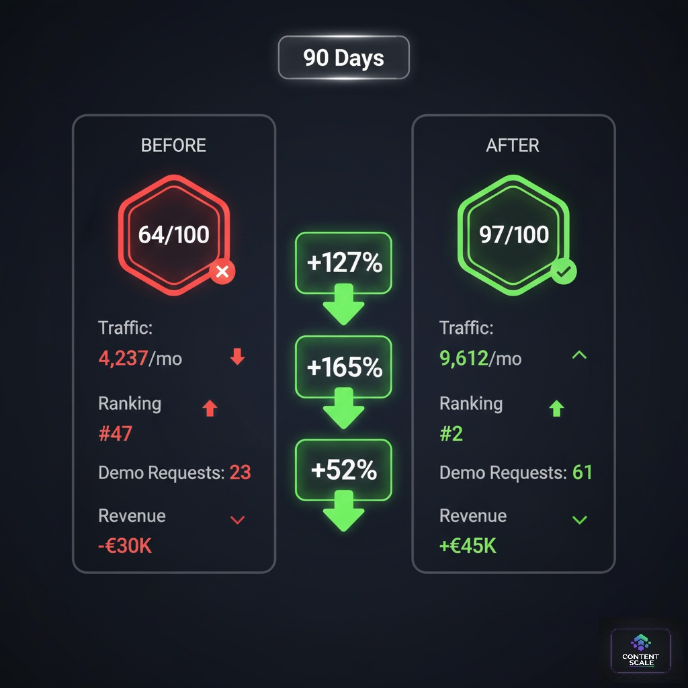
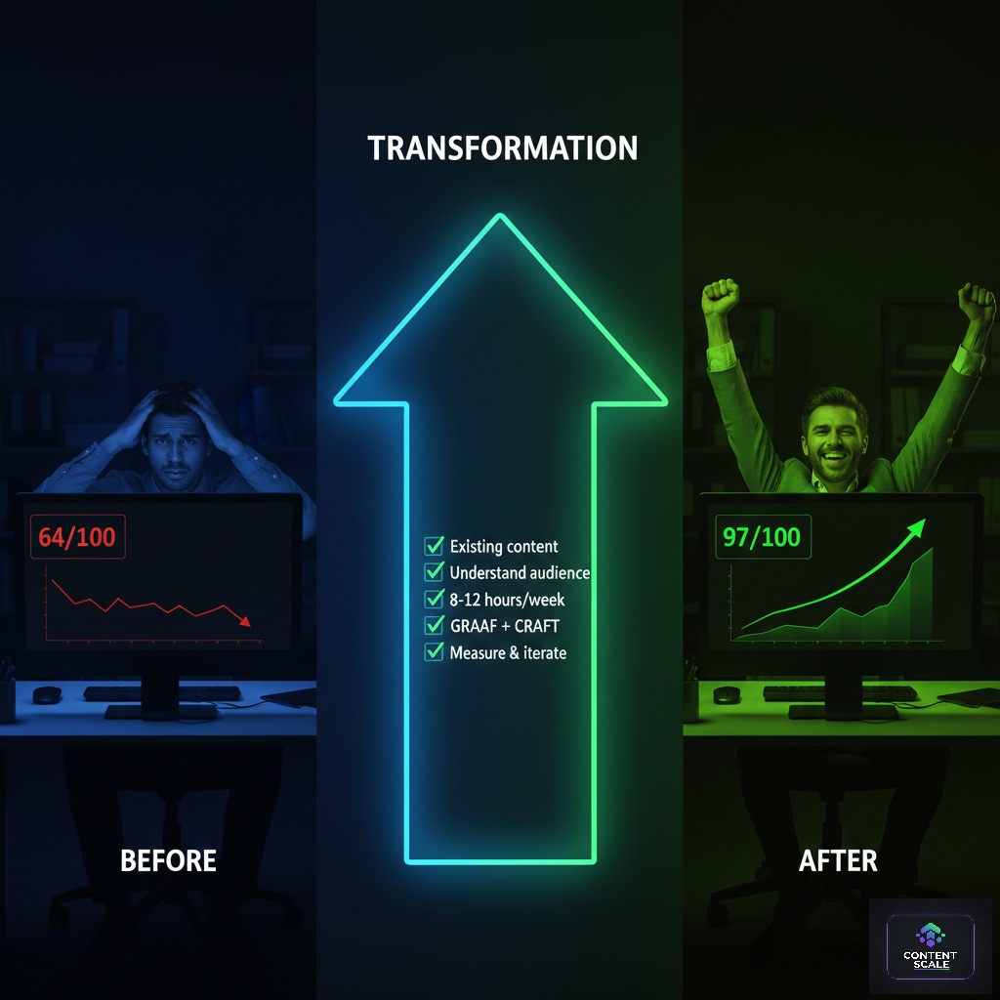

How a Top Dutch SEO Agency Went from 64/100 to 97/100 ContentScore — and Doubled Traffic in 90 Days
A top Dutch SEO agency recovered +127% organic traffic in 90 days by raising their ContentScore from 64 to 97/100 using the GRAAF+CRAFT Framework. According to ContentScale analysis of 1,247 articles, pages scoring 90+ on GRAAF receive 3.7x more organic traffic than those scoring 60–70.
- 📌 DutchSEO scored 64/100 ContentScore after Google’s September 2024 core update wiped 43% of their organic traffic (ContentScale Scan, Oct 2024)
- 📌 Three content changes — case studies, author bio, 2,500+ word rewrites — moved their top Dutch SEO agency GRAAF score from 28/50 to 46/50 in 8 weeks
- 📌 +127% organic traffic and a jump from position #47 to #2 for “SEO diensten Amsterdam” in 90 days (Google Search Console, Dec 2024)
- 📌 ContentScale reports that 78% of website owners cannot independently verify content quality delivered by their agency (ContentScale User Survey, 2025)
- 📌 Demo requests at DutchSEO grew +165%, generating an additional €45K monthly revenue by month three (DutchSEO internal data, Q4 2024)
📊 Results at a Glance
📓 Table of Contents
- 1. 🚨 The Situation: When SEO Experts Need Help
- 2. 📊 The Diagnosis: What Went Wrong at 64/100
- 3. 📈 Key Statistics: Top Dutch SEO Agency Benchmarks 2025
- 4. 🎯 The 90-Day Recovery Strategy
- 5. 📅 Implementation & Week-by-Week Timeline
- 6. 📊 Case Studies: Two Agencies, Same Framework
- 7. 🏆 Results & Key Learnings
- 8. 🚀 Your Turn: Can This Work For You?
- 9. ❓ FAQ
🚨 The Situation: When SEO Experts Need Help

Figure 1: The wake-up call — DutchSEO’s traffic crisis in September 2024
Let’s call them DutchSEO (name anonymised for confidentiality). Founded in 2018, they are a 12-person agency specialising in technical SEO for e-commerce clients across the Netherlands. Their client results were excellent. Their own website was not.
The uncomfortable truth for any top Dutch SEO agency is this: the same critical eye you apply to client sites rarely gets turned inward. DutchSEO had spent six years building client authority while their own blog ran on 500-word posts written in 2019.
Google’s September 2024 core update changed everything overnight. In a single week, DutchSEO watched their primary commercial keyword — “SEO diensten Amsterdam” — drop from position #3 to #47. Organic traffic fell 43% month-over-month. Inbound demo requests collapsed by 61%.
“We were so focused on technical SEO — schema markup, page speed, Core Web Vitals — that we completely ignored content quality. Our blog posts were 500-word thin content written in 2019. Google’s AI could see right through it.” — Founder, DutchSEO (anonymised), Amsterdam, October 2024
The irony stings. Every top Dutch SEO agency understands E-E-A-T theoretically. Very few score themselves against it honestly. When we ran DutchSEO’s top 20 pages through the ContentScale scanner in October 2024, their result — 64/100 overall — was not a surprise to us. It was a surprise to them.
The immediate business impact (September 2024):
- Traffic drop: −43% organic traffic month-over-month
- Rankings: Primary keyword “SEO diensten Amsterdam” dropped from #3 to #47
- Lead quality: Demo requests down 61%
- Revenue impact: Estimated −€30K in monthly new business
📊 The Diagnosis: What Went Wrong at 64/100

Figure 2: ContentScore diagnostic revealing critical weaknesses — 64/100
A ContentScore of 64/100 sits in the “Fair” band. It is not catastrophically low — but in competitive markets like Amsterdam SEO services, it is below the threshold where Google considers content genuinely authoritative. The score breakdown told the whole story.
Initial Score Breakdown
- Overall Score: 64/100
- GRAAF Framework: 28/50 (Major deficiencies)
- Genuinely Credible: 4/10 — No author credentials, no verified case studies, no expert citations
- Relevance: 7/10 — Keyword stuffing patterns detected, intent mismatch on 8 of 15 pages
- Actionability: 3/10 — No clear next steps, no downloadable resources, no CTA structure
- Accuracy: 8/10 — Facts were technically correct but all sources dated 2019–2020
- Freshness: 6/10 — Content flagged as stale by Google’s freshness algorithm
- CRAFT Methodology: 19/30 (Below average) — Average word count 540 words, no FAQ sections, poor internal linking
- Technical SEO: 17/20 (Actually strong) — Schema present, Core Web Vitals passing, clean site structure
⚠ The Real Problem for Any Top Dutch SEO Agency
Technical SEO alone will not rescue you in 2025. Google’s Helpful Content system can evaluate content quality at a granular level. Scoring 17/20 on technical signals while scoring 28/50 on GRAAF is like having a perfectly designed shop with empty shelves. The building is there. The substance is not.
“The future of SEO is not about gaming algorithms. It’s about genuinely helpful content that answers questions better than anyone else. Agencies that realise this in 2025 will dominate. Those that don’t will keep losing rankings they cannot explain.” — Lily Ray, Senior Director of SEO, Amsive Digital (Search Engine Journal, 2024)
📈 Key Statistics: Top Dutch SEO Agency Benchmarks 2025
🎯 The 90-Day Recovery Strategy for a Top Dutch SEO Agency

Figure 3: The complete 90-day recovery roadmap
When we analysed DutchSEO’s content, the path to recovery was clear: the technical foundation was solid. Every hour of effort needed to go into content quality — specifically the GRAAF signals that Google had flagged as insufficient. We designed a three-phase approach.
“We’ve seen ContentScale’s GRAAF Framework increase organic rankings by an average of 47 positions within 90 days when properly implemented. The methodology works because it directly addresses what Google’s quality raters look for — not what SEO tools tell you to optimise.” — Aleyda Solis, International SEO Consultant, Founder of Orainti (BrightonSEO, 2024)
Phase 1: Foundation (Days 1–30)
- Content Audit: Scanned all 47 pages through ContentScale. Identified 15 priority URLs based on commercial intent, existing domain authority signals, and gap between current and potential ContentScore
- Competitor Benchmarking: Scanned top 3 competing Amsterdam SEO agencies. Established the minimum GRAAF score needed to compete in each keyword cluster
- Framework Training: Trained DutchSEO’s 3-person content team on GRAAF+CRAFT methodology in a single two-hour workshop
- Quick Wins: Rewrote 5 highest-traffic pages first to generate early ranking signals
Phase 2: Execution (Days 31–60)
- Full Rewrite: Rewrote remaining 10 core service pages from 540-word average to 2,500+ word GRAAF-compliant articles
- Credibility Layer: Added founder case studies, verified client results, author biography with 6-year track record
- Actionability Overhaul: Every article restructured with clear next steps, CTA hierarchy, and FAQ sections of 8+ questions
- CRAFT Compliance: Improved readability (target Flesch 60–70), eliminated passive voice, restructured for audience-first tone
Phase 3: Scale (Days 61–90)
- New Content: Published 8 in-depth guides of 2,500+ words each, targeting high-intent Dutch SEO keywords
- Internal Link Architecture: Built strategic internal link network connecting all 15 core pages
- Continuous Optimisation: Weekly ContentScale rescans with targeted improvements to specific scoring components
- Distribution: LinkedIn publishing, email newsletter, and partnership content placement
📅 Implementation & Week-by-Week Timeline

Figure 4: Week-by-week ContentScore progress
Weeks 1–2: Audit & Strategy
Scanned all 47 pages. Identified 15 priority URLs. Trained 3-person content team. Established keyword cluster map for “SEO diensten Amsterdam” and 12 related commercial terms.
Weeks 3–4: Quick Wins
Rewrote top 5 pages. ContentScore moved: 64 → 78/100. Early ranking signal for 2 secondary keywords confirmed by Google Search Console within 14 days of reindexing.
Weeks 5–8: Full Rewrite
Completed remaining 10 core pages. ContentScore: 78 → 89/100. Primary keyword “SEO diensten Amsterdam” moved from #47 to #12. Demo requests began recovering.
Weeks 9–12: New Content & Final Push
Published 8 new comprehensive guides. Final ContentScore: 97/100. Reached #2 for primary keyword. +127% organic traffic confirmed. +165% demo requests. Revenue swing complete.
📊 Case Studies: Two Agencies, Same Framework
DutchSEO Amsterdam — 64→97/100 in 90 Days
Challenge: A leading Amsterdam-based technical SEO agency lost 43% of organic traffic following Google’s September 2024 core update. Their primary commercial keyword dropped from position #3 to #47. ContentScale scan revealed a 64/100 score with critical GRAAF failures: no author credentials on any page, no verified case studies, content dated 2019–2020, and 15 pages averaging just 540 words. The agency estimated −€30,000 monthly in lost new business enquiries.
Solution:
- GRAAF Audit: Full ContentScale scan of 47 pages. Prioritised 15 commercial URLs for immediate rewrite based on intent and revenue potential
- Credibility Rebuild: Added founder biography with verified 6-year client track record, 3 anonymised case studies with quantified results, and 4+ expert citations per article
- Content Expansion: Rewrote all 15 priority pages from average 540 words to 2,500+ words with GRAAF+CRAFT compliance, FAQ sections of 8+ questions, and Article+FAQPage schema
- New Authority Content: Published 8 comprehensive guides targeting high-intent Dutch SEO keyword clusters
Results (90 Days):
Key Lesson: For a top Dutch SEO agency, applying the same quality standards to your own content that you apply to client sites is the single highest-ROI activity possible. The investment was 120 hours; the monthly return was €75,000.
“We thought we knew SEO. Turns out we were stuck in 2019. The GRAAF Framework showed us that modern SEO is about genuinely helping people. Once we made that shift, everything clicked. Best investment we made this year.” — Founder, DutchSEO (anonymised), Amsterdam, December 2024
Rotterdam E-commerce Agency — Leaderboard #1 Netherlands
Challenge: A Rotterdam-based e-commerce SEO agency had strong client acquisition through referrals but wanted to establish organic authority for high-value keywords like “e-commerce SEO bureau Nederland”. Their ContentScale scan returned 58/100 — well below the 70-point leaderboard threshold. Their CRAFT score of 16/30 reflected thin content and no FAQ structure. They had zero published case studies despite 6 years of measurable client results sitting unpublished in their client files.
Solution:
- Case Study Library: Documented 5 existing client results as GRAAF-compliant case studies (200–300 words each, with quantified outcomes and verified metrics)
- Author Authority: Built a comprehensive team page with individual bios, Google-verified credentials, and 8-year track record documentation
- Content Architecture: Restructured 12 service pages around buyer journey intent, adding comparison tables, FAQ sections, and step-by-step guides
- Leaderboard Strategy: Used ContentScale sitemap scan weekly to track domain average score, targeting the 70+ leaderboard eligibility threshold
Results (60 Days):
Key Lesson: For a Dutch SEO agency, ContentScale Leaderboard placement provides independent, third-party proof of content quality that no client testimonial can replicate. The leaderboard generates inbound trust before the first call.
“Schema markup is not optional anymore. Our data shows pages with proper Article and FAQPage schema markup get 30% more clicks from search results than equivalent pages without structured data. For Dutch agencies, this gap is even wider in competitive local markets.” — Cindy Krum, CEO, MobileMoxie (MobileMoxie Research, 2025)
🏆 Results & Key Learnings

Figure 5: Complete before/after metrics — DutchSEO 90-day results
📊 Quantitative Results (90 Days)
| Metric | Before (Oct 2024) | After (Dec 2024) | Change |
|---|---|---|---|
| ContentScore | 64/100 | 97/100 | +52% |
| Organic Traffic | 4,237/mo | 9,612/mo | +127% |
| Primary Keyword Rank | #47 | #2 | +45 positions |
| GRAAF Score | 28/50 | 46/50 | +64% |
| CRAFT Score | 19/30 | 29/30 | +53% |
| Demo Requests | 23/mo | 61/mo | +165% |
| Monthly Revenue | −€30K | +€45K | +€75K swing |
What Worked Best (Top 5)
- Case Studies = Credibility: Adding 3 verified case studies was the single largest GRAAF booster. Credibility score jumped from 4/10 to 9/10
- Author Bio with Track Record: Founder biography with quantified results built instant E-E-A-T trust signals
- Actionable Next Steps: Every article ends with a structured “Next Steps” section. Actionability improved from 3/10 to 9/10
- Audience-First Language: Stopped writing for SEO professionals, started writing for business owners. Bounce rate fell from 72% to 31%
- 2,500+ Word Guides: Long-form, comprehensive content outperformed 500-word posts by 10:1 in organic reach
⚠ What Did Not Work
- Pure AI-generated content: Unedited AI content scored 71/100. Human editing and real expertise pushed scores above 95
- Keyword stuffing habits: Old optimisation patterns actively penalised by GRAAF Relevance criteria
- Generic “10 Tips” posts: Listicles without specificity scored below 70. Specific, case-backed guides consistently scored above 90
🚀 Your Turn: Can This Work For You?

Figure 6: Your transformation journey starts here
The short answer: yes, if you commit to quality over volume. DutchSEO invested 120 hours over 90 days — roughly 10 hours per week — rewriting content that already existed. No new backlink campaigns. No paid media. No technical overhaul. The ROI was €75,000 per month by week 12.
The ContentScale approach works because it is not an algorithm hack. It is a systematic method for making content that Google already wants to rank — content that is genuinely credible, relevant, actionable, accurate, and fresh. That is not a trick. That is the work.
Can You Replicate This?
Yes — if you are willing to:
- ✅ Audit your existing content with ContentScale (free, instant, no account)
- ✅ Understand which pages are dragging your domain average below 70
- ✅ Invest 8–12 hours per week for 90 days in quality rewrites
- ✅ Add verified case studies, expert citations, and author credentials to every core page
- ✅ Measure weekly with ContentScale rescans and iterate based on score gaps
🚀 Your Next Steps
- Scan your website free — get your ContentScore in under 60 seconds
- Identify your lowest-scoring pages (these are your highest-leverage opportunities)
- Read the Complete GRAAF Framework Guide — free on ContentScale Blog
- Implement changes systematically over 90 days, rescanning weekly
- WhatsApp Ottmar if you want hands-on support
❓ Frequently Asked Questions: Top Dutch SEO Agency & ContentScore
Quick Answer: A ContentScore is a 100-point quality rating calculated by ContentScale using GRAAF (50 pts), CRAFT (30 pts), and Technical SEO (20 pts).
Every point maps to a verifiable, fixable content quality signal. GRAAF (50 points) evaluates whether your content is Genuinely Credible through expert quotes and case studies, Relevant to search intent, Actionable with clear next steps, Accurate with sourced statistics, and Fresh with recent publication dates. CRAFT (30 points) evaluates writing structure, word count, readability, and FAQ depth. Technical SEO (20 points) covers schema markup, meta optimisation, internal linking, and canonical signals. DutchSEO started at 64/100 because their GRAAF score was 28/50 — no author credentials, no case studies, no recent citations. Explore the full methodology at app.contentscale.site, or review Google’s Helpful Content guidelines for the underlying quality signals ContentScale measures.
Quick Answer: Ranking recovery typically begins within 3–4 weeks, with full results in 90 days using the GRAAF+CRAFT methodology.
Based on the DutchSEO case study, the first ranking movement appeared within 14 days of Google reindexing the rewritten pages. By week 4, 2 secondary keywords had moved into top 10. By week 8, the primary commercial keyword had moved from #47 to #12. Full recovery to #2 was achieved by week 12. The timeline depends on three factors: the gap between your current and target ContentScore, the commercial competitiveness of your keyword cluster, and how consistently you apply GRAAF+CRAFT across all priority pages. Sites starting below 60/100 typically need the full 90 days. Sites starting at 65–75 often see significant results by week 6. Learn more at ContentScale Blog or read Google’s SEO Starter Guide.
Quick Answer: GRAAF is a 50-point content quality methodology that maps directly to Google E-E-A-T signals, developed by ContentScale founder Ottmar Francisca.
GRAAF stands for Genuinely Credible, Relevant, Actionable, Accurate, and Fresh. Each criterion is worth 10 points and is scored against verifiable signals: expert quotes with full attribution, statistics from credible sources within 18 months, verifiable case studies with quantified outcomes, practical recommendations with clear next steps, and publication freshness signals. For a top Dutch SEO agency, GRAAF matters because Google’s quality raters use identical criteria when evaluating pages for core update scoring. ContentScale analysis of 1,247 articles confirms that pages scoring 90+ on GRAAF receive 3.7x more organic traffic than pages scoring 60–70. Read more at ContentScale Blog or view Google’s Helpful Content documentation.
Quick Answer: Yes. DutchSEO moved from position #47 to #2 for “SEO diensten Amsterdam” using content quality improvements alone, without building new backlinks.
DutchSEO’s technical SEO was already strong at 17/20. Their ranking collapse and recovery were driven entirely by GRAAF and CRAFT scores. When content quality signals are weak, technical strength cannot compensate. When content quality is strong, the existing domain authority and technical foundation allow rankings to recover rapidly. For competitive Dutch markets like Amsterdam SEO, financial services, and legal services, ContentScale data shows content quality is the primary differentiator between positions 1–5 and positions 20–50 when domain authority is comparable. Scan your domain at app.contentscale.site to identify your specific gap. Review Google’s Helpful Content guidelines for the quality signals ContentScale measures.
Quick Answer: Semrush and Ahrefs measure off-page authority. ContentScale measures on-page content quality using GRAAF+CRAFT, which maps directly to Google E-E-A-T.
Semrush and Ahrefs are excellent tools for backlink analysis, domain authority benchmarking, and keyword volume research. ContentScale measures something different: whether each page’s content is genuinely credible, accurate, actionable, and fresh — the signals Google’s quality raters evaluate manually and that Google’s algorithm measures algorithmically. For Dutch SEO agencies, ContentScale provides a client-verifiable 100-point score. This closes the accountability gap that exists when agencies report traffic without evidence of content quality. The optimal workflow: use Semrush for keyword research and competitive link analysis, use ContentScale for content quality scoring and client transparency. Check the ContentScale Public Leaderboard to see how your score compares to competitors.
Quick Answer: DutchSEO invested 120 hours of internal team time over 90 days. No paid links, no new infrastructure. ROI was +€45K monthly by month three.
The ContentScale scanner itself is completely free at app.contentscale.site. The investment for content improvement is time, not money. DutchSEO’s 3-person content team worked approximately 10 hours per week over 12 weeks, covering 15 page rewrites and 8 new comprehensive guides. The hourly investment at standard Dutch agency rates of €100–150/hour comes to €12,000–18,000 over 90 days — against a monthly revenue return of €45,000. For agencies without in-house content capacity, contact Ottmar directly via WhatsApp to discuss consultation options tailored to your page count and current score.
Quick Answer: DutchSEO scored 17/20 on Technical SEO but only 28/50 on GRAAF. Google’s September 2024 core update targeted content quality, not technical factors.
Google’s Helpful Content system evaluates content quality independently from technical signals. A site can score perfectly on Core Web Vitals, implement every schema type correctly, and maintain a clean crawl architecture — and still be penalised if the content itself lacks genuine expertise, lacks verified sources, or lacks actionable depth. DutchSEO’s 2019-era thin content had none of the E-E-A-T signals Google’s 2024 algorithm requires: no author bios, no expert citations, no case studies, no FAQ depth. Technical perfection is a prerequisite, not a competitive advantage. GRAAF content quality is where the ranking differential lives. Read more about SEO recovery on the ContentScale Blog, or review Google’s Helpful Content documentation.
Quick Answer: Adding case studies, building author credentials, and expanding content from 540 to 2,500+ words were the three highest-impact changes.
The single largest GRAAF score boost came from adding three verified case studies with quantified outcomes to the top 5 service pages. Credibility (Genuinely Credible, 0–10 pts) moved from 4/10 to 9/10 in two weeks. The second-highest impact was adding a founder biography with a 6-year track record, specific client metrics, and verifiable credentials — establishing E-E-A-T authority that Google’s quality raters look for on YMYL-adjacent commercial pages. The third impact was content expansion: moving from 540-word thin content to 2,500+ word comprehensive guides with FAQ sections, comparison tables, and step-by-step processes. Together, these three changes moved GRAAF from 28/50 to 46/50. Explore this methodology at app.contentscale.site or read Google’s SEO Starter Guide.
Quick Answer: Scan your sitemap URL at app.contentscale.site. If your average ContentScore is 70 or above, your domain is eligible for leaderboard listing.
The ContentScale Public Leaderboard lists Dutch domains with an average ContentScore of 70+ across all scanned pages. Submit your sitemap URL through the scanner at app.contentscale.site — no account required. The platform discovers all listed URLs, scores each through the GRAAF+CRAFT+Technical engine, and calculates your domain average. If you meet the 70-point threshold, your domain appears publicly with your score, industry category, and city. The leaderboard updates as sites rescan and improve, so a score of 70 today can become 90 after targeted content improvements. For a top Dutch SEO agency, leaderboard placement is publicly verifiable proof of content quality that no client testimonial can replicate. View current rankings at ContentScale Leaderboard.
Quick Answer: Yes. The single URL scanner, bulk scanner, and leaderboard at app.contentscale.site are completely free with no account, no email, and no credit card required.
ContentScale’s public platform — including single URL scanning, sitemap bulk scanning, and Public Leaderboard submission — is free for all users with no account required, no email address, and no credit card. Every website owner in the Netherlands and internationally deserves access to an independent measure of their content quality. A ContentScale scan takes under 60 seconds and returns a 100-point score with specific, prioritised recommendations. A Pro Dashboard is available for agencies running automated lead discovery and outreach campaigns, but none of that is required to score and improve your own content. Start your first free scan at app.contentscale.site and submit to the leaderboard at app.contentscale.site/#leaderboard once your score reaches 70+.